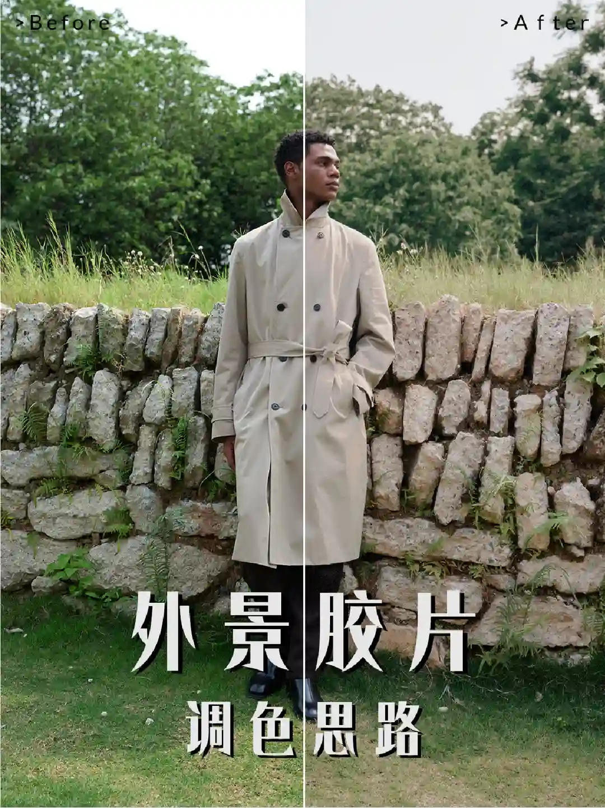
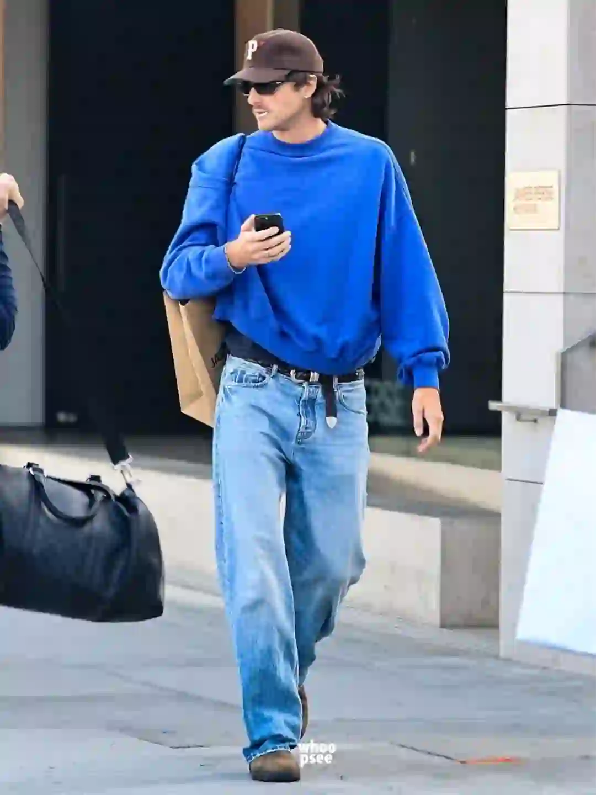
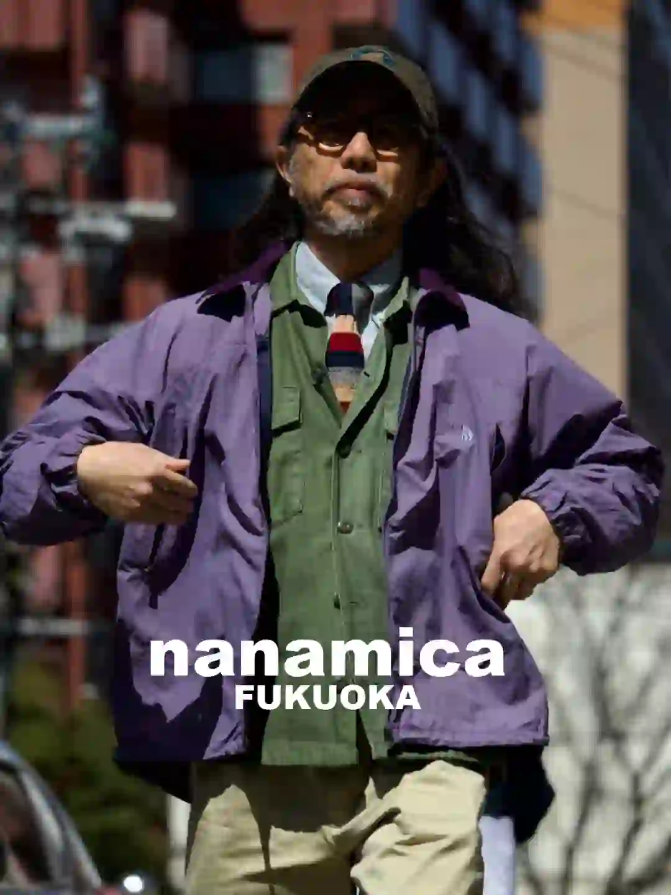

2026年5月3日
05月03日报告
生成时间：2026-05-03 · 范围：时尚 / 穿搭 / 网球
今日参考账号：FOCUS POINT棱影 / 设计灵感站 / 负像之诗
今日高信号标题：如何把外景塑料感的绿色调成高级胶片调❓ ｜ ✨审美积累丨排版不是文字大才吸睛 ｜ 100位宝藏摄影大师 | jorgemchagas
竞品策略变化：未命中监控竞品样本
今日高信号标题：如何把外景塑料感的绿色调成高级胶片调❓ ｜ ✨审美积累丨排版不是文字大才吸睛 ｜ 100位宝藏摄影大师 | jorgemchagas
竞品策略变化：未命中监控竞品样本

时尚 · 01
如何把外景塑料感的绿色调成高级胶片调❓
⭐ 1619
👍 1696
今天可学
- 内容结构：视频封面 + 视频，更像视频示范/单点表达
- 收藏效率高，说明用户把它当成可复用模板/知识卡，不只是刷到即过
- 评论活跃，适合加入观点冲突、对比案例或常见误区来拉讨论
- 正文入口：外景拍摄时，绿意太浓有时也很犯愁！ 太过塑料感的绿色一下就把片子的整体调性拉低了 不过希望你看完视频，就能学会顺利解决这一问题，直接变身复古高级的胶片感 这一组完整成片请收看： …
- 标签聚焦：#调色教程 / #仿胶片调色 / #胶片调色 / #摄影教程

时尚 · 02
✨审美积累丨排版不是文字大才吸睛
⭐ 930
👍 1055
今天可学
- 内容结构：文字卡 + 18图，更像资料型合集
- 收藏效率高，说明用户把它当成可复用模板/知识卡，不只是刷到即过
- 正文入口：分享一组JOE DIVER的版式设计作品，文字排版，不是字体越大越好，错落有致的视觉韵律更吸睛。 #英文字体 #高级感排版 #设计美学 #审美积累 #平面设…
- 标签聚焦：#英文字体 / #高级感排版 / #设计美学 / #审美积累
时尚 · 03
100位宝藏摄影大师 | jorgemchagas
⭐ 958
👍 3951
今天可学
- 内容结构：未判定 + 0图，更像单点表达
- 收藏效率高，说明用户把它当成可复用模板/知识卡，不只是刷到即过
- 评论活跃，适合加入观点冲突、对比案例或常见误区来拉讨论
- 正文入口：（正文为空或未取到）

时尚 · 04
40+男人的终极指标，拿捏好高级感
⭐ 847
👍 1242
今天可学
- 内容结构：未判定 + 4图，更像单点表达
- 收藏效率高，说明用户把它当成可复用模板/知识卡，不只是刷到即过
- 评论活跃，适合加入观点冲突、对比案例或常见误区来拉讨论
- 标签聚焦：#英伦风 / #男士穿搭技巧 / #男士穿搭 / #绅士的品格
时尚 · 05
“秀场积累”Emporio Armani 26秋冬时装秀
⭐ 678
👍 1279
今天可学
- 内容结构：未判定 + 0图，更像单点表达
- 收藏效率高，说明用户把它当成可复用模板/知识卡，不只是刷到即过
- 正文入口：（正文为空或未取到）
时尚赛道今日方法论
- 样本依据：如何把外景塑料感的绿色调成高级胶片调❓ / ✨审美积累丨排版不是文字大才吸睛
- 当天结构信号：未判定封面 + 0图 最强；优先学习样本 5 条，低收藏流量样本 0 条。
- 时尚赛道今天跑出来的是“审美判断 + 资料感整理”：像 如何把外景塑料感的绿色调成高级胶片调❓ 这类高收藏样本，核心不是讲步骤，而是把趋势、风格线索和案例并排给足，用户才愿意以 95.5% 的收藏率反复回看。
- 执行建议：标题先抛出趋势/风格判断，再给明确收益；正文少讲空泛氛围，多给风格标签、对照案例和可复看的视觉结论，让内容更像灵感资料卡。
今日参考账号：FashionReporter / NEU:FORM / Top的大高
今日高信号标题：我愿称Jacob为街拍界男版Kendall！ ｜ Brad Pitt 1990s–2000s 初的非造型状态 ｜ nanamica 店员穿搭模版第七十八弹｜日系穿搭
竞品策略变化：未命中监控竞品样本
今日高信号标题：我愿称Jacob为街拍界男版Kendall！ ｜ Brad Pitt 1990s–2000s 初的非造型状态 ｜ nanamica 店员穿搭模版第七十八弹｜日系穿搭
竞品策略变化：未命中监控竞品样本

穿搭 · 01
我愿称Jacob为街拍界男版Kendall！
⭐ 460
👍 2202
今天可学
- 内容结构：人物 + 9图，更像资料型合集
- 收藏效率高，说明用户把它当成可复用模板/知识卡，不只是刷到即过
- 评论活跃，适合加入观点冲突、对比案例或常见误区来拉讨论
- 正文入口：欧美现役男星里私服街拍佼佼者Jacob Elordi又出神图了！一整套蓝色系穿搭，松弛感拉满！you like it？ 图源whoopsee.it
- 标签聚焦：#时尚资讯 / #时尚穿搭灵感 / #欧美帅哥 / #街拍
穿搭 · 02
Brad Pitt 1990s–2000s 初的非造型状态
⭐ 493
👍 1728
今天可学
- 内容结构：未判定 + 0图，更像单点表达
- 收藏效率高，说明用户把它当成可复用模板/知识卡，不只是刷到即过
- 正文入口：（正文为空或未取到）

穿搭 · 03
nanamica 店员穿搭模版第七十八弹｜日系穿搭
⭐ 290
👍 618
今天可学
- 内容结构：人物 + 9图，更像资料型合集
- 收藏效率高，说明用户把它当成可复用模板/知识卡，不只是刷到即过
- 正文入口：来自nanamica 福冈店员穿搭演绎 图片来自©️nanamica_fykuoka
- 标签聚焦：#日系穿搭 / #穿搭灵感 / #审美积累 / #穿搭

穿搭 · 04
我喜欢的日系感觉
⭐ 364
👍 1519
今天可学
- 内容结构：人物 + 4图，更像单点表达
- 收藏效率高，说明用户把它当成可复用模板/知识卡，不只是刷到即过
- 评论活跃，适合加入观点冲突、对比案例或常见误区来拉讨论
- 标签聚焦：#日系穿搭 / #通勤穿搭 / #廓系穿搭 / #日常穿搭
穿搭 · 05
2025我的年度18图ootd
⭐ 319
👍 997
今天可学
- 内容结构：人物 + 0图，更像单点表达
- 收藏效率高，说明用户把它当成可复用模板/知识卡，不只是刷到即过
- 评论活跃，适合加入观点冲突、对比案例或常见误区来拉讨论
- 正文入口：（正文为空或未取到）
穿搭赛道今日方法论
- 样本依据：我愿称Jacob为街拍界男版Kendall！ / Brad Pitt 1990s–2000s 初的非造型状态
- 当天结构信号：人物封面 + 9图 最强；优先学习样本 5 条，低收藏流量样本 0 条。
- 穿搭赛道今天最有效的是“整套可抄作业方案”：高收藏样本 nanamica 店员穿搭模版第七十八弹｜日系穿搭 说明，只要场景清楚、look 数量够多、搭配结果一眼能看懂，就更容易拿到 46.9% 级别的收藏反馈。
- 执行建议：优先做通勤/职业/一周不重样/套装盘点这类清单式内容；封面先给完整上身结果，图组里再拆单品变化和搭配理由，不要只发单套氛围图。
今日参考账号：李现 / 网球gogogo / Takuya Komura 小村拓也
今日高信号标题：2.0网球小将李师傅对拉集锦…🎾 ｜ 网球标准：德约科维奇-正手慢动作分析！ ｜ all black🎾🐦
竞品策略变化：未命中监控竞品样本
今日高信号标题：2.0网球小将李师傅对拉集锦…🎾 ｜ 网球标准：德约科维奇-正手慢动作分析！ ｜ all black🎾🐦
竞品策略变化：未命中监控竞品样本
网球 · 01
2.0网球小将李师傅对拉集锦…🎾
⭐ 4594
👍 57925
今天可学
- 内容结构：未判定 + 0图，更像单点表达
- 这条流量带有明显外部加成，只拆内容结构与包装，不原样复制流量来源
- 评论活跃，适合加入观点冲突、对比案例或常见误区来拉讨论
- 正文入口：（正文为空或未取到）

网球 · 02
网球标准：德约科维奇-正手慢动作分析！
⭐ 7189
👍 8098
今天可学
- 内容结构：视频封面 + 视频，更像视频示范/单点表达
- 这条流量带有明显外部加成，只拆内容结构与包装，不原样复制流量来源
- 正文入口：最适合业余选手学习的网球动作~#网球 #网球教学 #德约科维奇 #国庆节 #WTT中国大满贯 #网球中国赛季来了 #上海大师赛 #球类运动日常 #打球 #人生的意义
- 标签聚焦：#网球 / #网球教学 / #德约科维奇 / #国庆节

网球 · 03
all black🎾🐦
⭐ 742
👍 3830
今天可学
- 内容结构：视频封面 + 视频，更像视频示范/单点表达
- 收藏与点赞较平衡，可学选题包装，但仍需补强可执行细节
- 标签聚焦：#wilsontennis / #ontennis / #asicstennis / #tennis

网球 · 04
男士们！请用网球穿搭帅哭我[抽泣R]
⭐ 518
👍 1119
今天可学
- 内容结构：人物 + 1图，更像单点表达
- 收藏效率高，说明用户把它当成可复用模板/知识卡，不只是刷到即过
- 评论活跃，适合加入观点冲突、对比案例或常见误区来拉讨论
- 标签聚焦：#网瘾是网球的网 / #网球热土 / #运动男孩 / #运动的男人

网球 · 05
网球穿搭分享🎾
⭐ 707
👍 1785
今天可学
- 内容结构：视频封面 + 视频，更像视频示范/单点表达
- 收藏效率高，说明用户把它当成可复用模板/知识卡，不只是刷到即过
- 评论活跃，适合加入观点冲突、对比案例或常见误区来拉讨论
- 正文入口：穿着我的新衣服上课去了
- 标签聚焦：#ootd / #男生穿搭 / #网球穿搭
网球赛道今日方法论
- 样本依据：男士们！请用网球穿搭帅哭我[抽泣R] / 网球穿搭分享🎾
- 当天结构信号：视频封面封面 + 视频 最强；优先学习样本 2 条，低收藏流量样本 1 条。
- 网球赛道今天胜出的不是热闹球场感，而是“动作纠错/装备收益/新手可执行”：高收藏样本 男士们！请用网球穿搭帅哭我[抽泣R] 证明，只要用户能马上拿去练，收藏率就能来到 46.3%。
- 执行建议：标题写清动作部位、错误修正或装备收益；内容里给慢动作、步骤和上场场景。明星/赛事样本只借包装，不把热点本身当方法论。
- 反例提醒：2.0网球小将李师傅对拉集锦…🎾 点赞高但收藏低，说明这类曝光型内容能带流量，不适合直接当明日主打法。
- 风险提醒：2.0网球小将李师傅对拉集锦…🎾 已标记为 [不可复制]，只拆结构，不作为明日选题原样跟进。
- 自动抽取规则：仅收录收藏率 >20% 且未被标记为 [不可复制] 的标题模板
- 写入目标：/Users/zhangxiaosong/shared/context/xhs-knowledge/topics/title-templates.md
- 把今天高收藏、高可复制的打法优先塞进明日发帖计划
- 竞品若连续两天从展示型转向教程/资料型，单独开策略变更记录
- 对被标注 [不可复制] 的样本，只拆结构，不抄流量来源